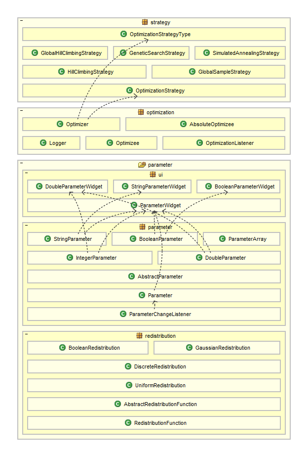

This package .
This project is inspired by the book "How to Solve It: Modern Heuristics" by Zbigniew Michalewicz and David B. Fogel.
Many of the search algorithms described in the book have been implemented in this java library.
An Optimizer uses a specified optimization strategy ( see OptimizationStrategyType) to optimize an Optimizee.
Optimization is nearly the same thing as search. In the puzzle implementations in bb4-puzzles, optimization
is used to search for a solution using the genetic algorithm strategy. In the two player game implementations in bb4-games,
optimization is used to help the computer to learn to play better.
